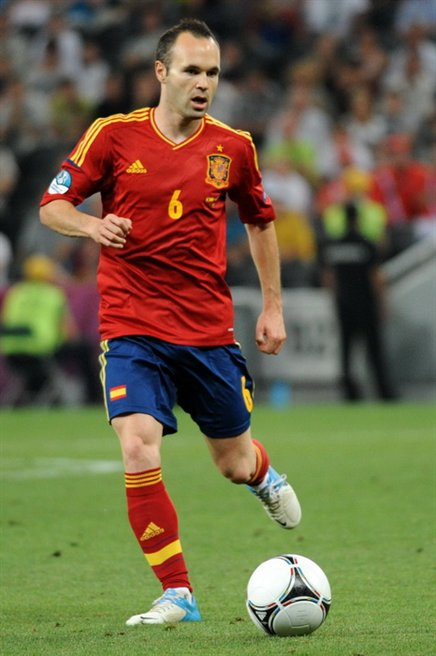

Andrés Iniesta
|
Andrés Iniesta Luján (Fuentealbilla, Albacete, España, 11 de mayo de 1984) es un futbolista español que juega como centrocampista en el Fútbol Club Barcelona de la Primera División de España, equipo del que es capitán. Su formación como futbolista comenzó en las categorías inferiores del Albacete Balompié, en el que ingresó con ocho años. A los doce fichó por el F.C. Barcelona tras su destacada actuación en un torneo nacional alevín, trasladando su residencia a La Masía. Debutó con el primer equipo azulgrana en Primera División durante la temporada 2002/03, habiendo conquistado desde entonces 30 títulos como barcelonista. Tiene contrato hasta el año 2018 y una cláusula de rescisión de 200 millones de euros. Como internacional español, Andrés Iniesta ha pasado por las categorías inferiores de la selección nacional, proclamándose campeón de Europa sub-16 en 2001 y sub-19 en 2002 y subcampeón mundial juvenil en 2003. Es internacional absoluto con la selección española desde 2006, con la que se ha proclamado bicampeón de Europa en 2008 y 2012 y campeón del mundo en 2010, anotando el célebre gol de la victoria ante los neerlandeses en el minuto 116' de la final. |
 |
|---|